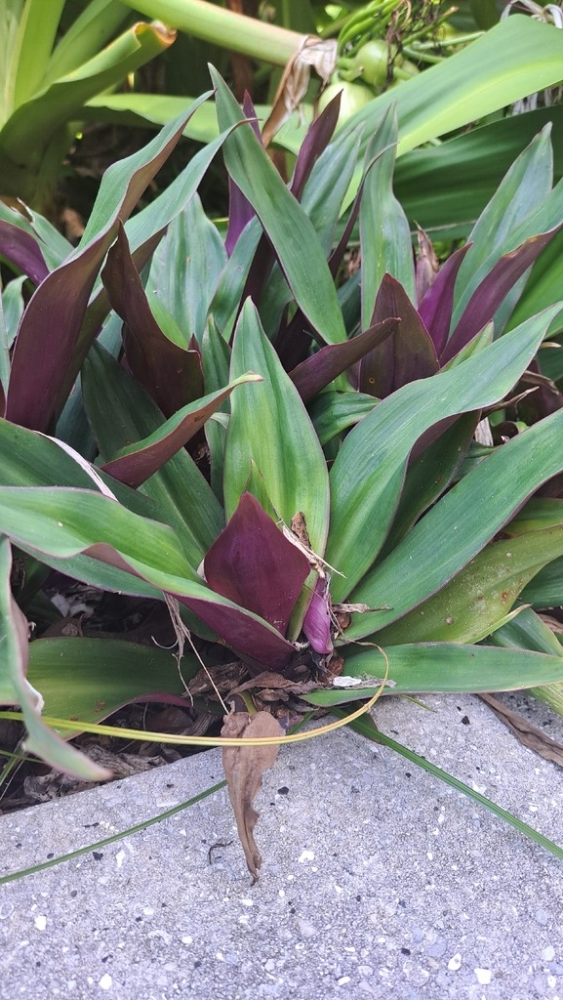

- The common name describes the flower arrangement precisely: small white flowers nestled inside boat-shaped purple bracts, like a figure in a cradle. The bracts are the persistent ornamental feature; the actual flowers are brief.
- Related to Purple Heart — same genus, same spiderwort family. Also contains compounds that may irritate skin.
- A durable groundcover tolerating sun, shade, drought, and neglect. One of the most commonly planted groundcovers in Florida.
Non-native. Native to Belize, Guatemala, and southern Mexico. Member of Commelinaceae — the spiderwort family.
- Moses-in-the-Cradle is grown for its foliage: stiff, sword-shaped leaves in rosettes, deep green above and vivid purple beneath. The common name comes from the flowers - small and white, tucked down inside a pair of boat-shaped purple bracts at the leaf bases, like a tiny figure cradled in a boat, which also gives it the names Oyster Plant and Boat Lily.
- It is a tough, low, clumping groundcover from southern Mexico and Central America that spreads steadily and takes sun or shade, drought, and poor soil. A dwarf form is especially common in mass plantings and borders. The sap can irritate skin and eyes, so gloves are worth it when handling the plant in quantity.
- It is undemanding and colorful year-round, which is exactly why it shows up so often in warm-climate landscaping.
Limited wildlife value. The small flowers sit largely enclosed within their bracts and draw few visitors; the plant is grown for foliage rather than for wildlife. The dense rosettes give minor ground-level cover.
Small, white, three-petaled, clustered low among the leaves inside a pair of boat-shaped purple bracts.
Stiff, sword-shaped, in a rosette; glossy green above, deep purple beneath.
Low, clumping rosette groundcover, spreading into colonies.
Rosettes of two-toned green-and-purple sword leaves; look down at the leaf bases for the little white flowers nested in purple boat-shaped bracts.
The sap can irritate skin and eyes — wear gloves when working with it in quantity. It isn't edible.
The ASPCA lists it as toxic to dogs and cats, causing oral irritation and stomach upset if chewed or eaten.


- © Yavid Justiniano (CC-BY-NC), via iNaturalist
- © Randall Carter (CC-BY-NC), via iNaturalist